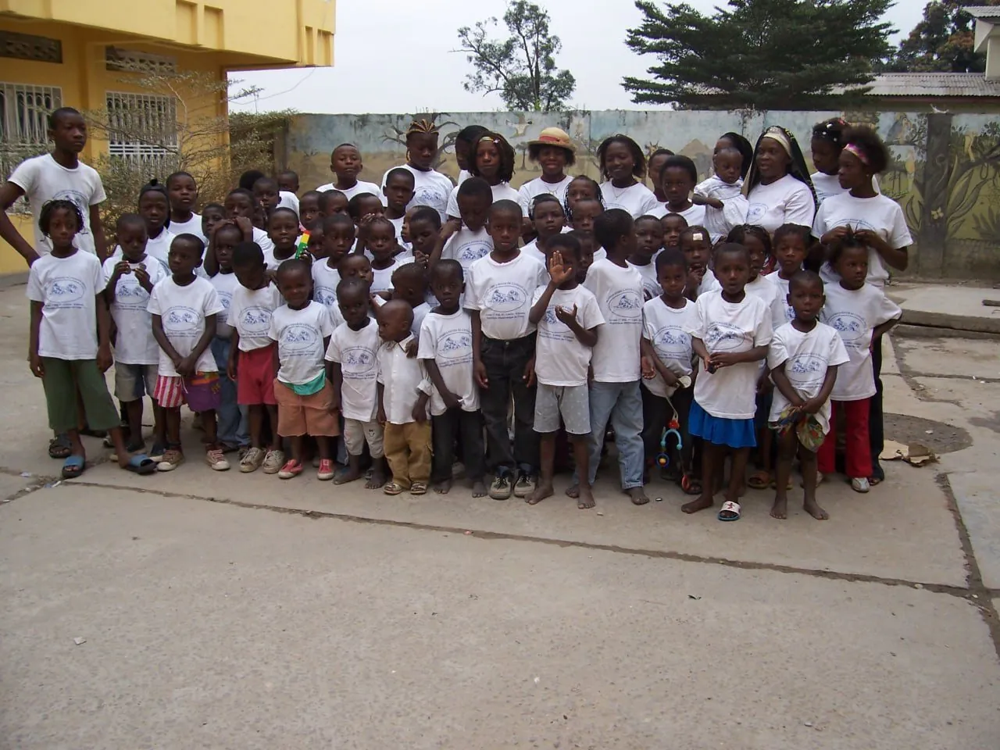
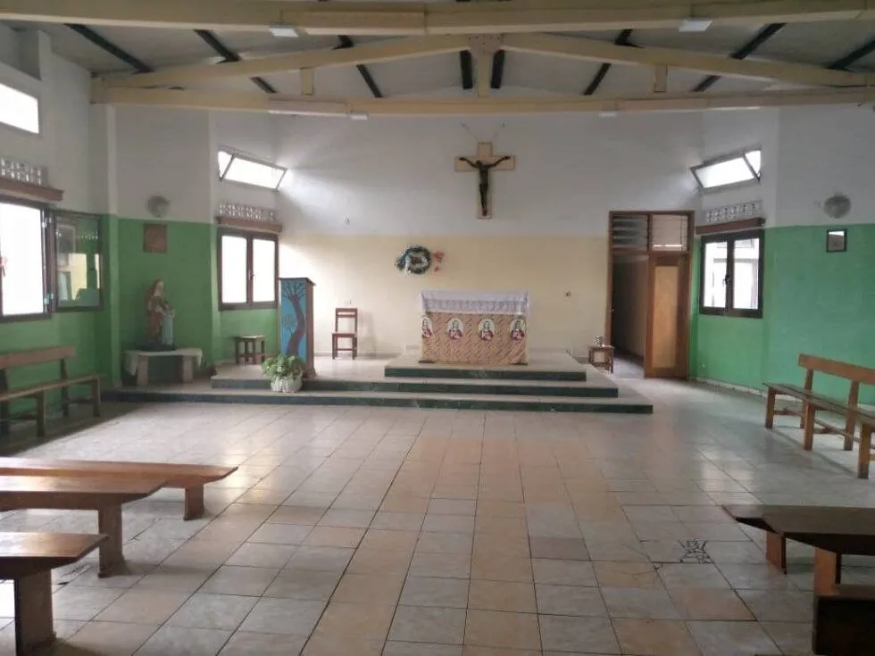
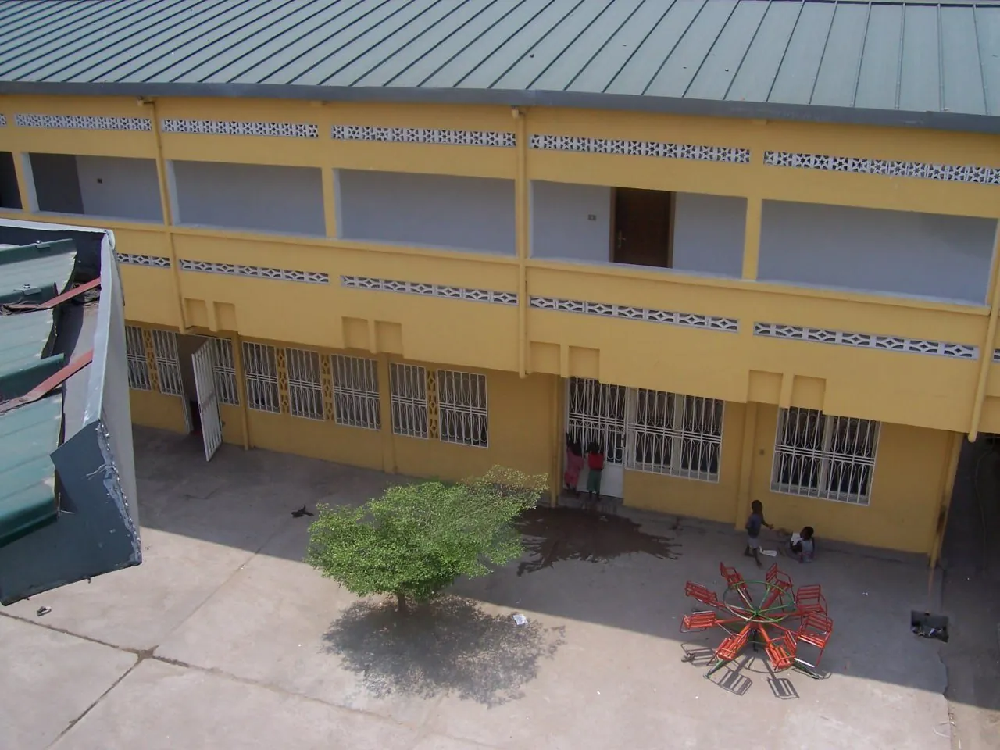

Protéger l'avenir, Construire une vie
Bienvenue au Foyer de l’Enfant Jésus. Un cadre familial et chaleureux pour loger, nourrir, soigner et scolariser des enfants en RDC.
— visites enregistrées

Bien plus qu'un toit
La Maison Enrica accompagne les enfants dans les dimensions essentielles de leur quotidien : protection, alimentation, éducation, santé et développement personnel.
Les Piliers du Quotidien
Éducation intégrale
Une éducation de qualité pour les enfants du foyer et du quartier, favorisant l’excellence académique dès le plus jeune âge.
En savoir plusVie au Foyer
120 enfants accueillis, 3 repas équilibrés par jour et une équipe professionnelle dévouée pour assurer leur bien-être quotidien.
Nos pensionnaires
19 Mentors
Éducation spirituelle
Transmission des valeurs de paix, de pardon et de fraternité à travers la prière et la messe quotidienne au sein de notre communauté.
Nos valeurs20 ans de la Maison Enrica
Quatre vidéos pour revivre une célébration remplie de joie, de souvenirs et de reconnaissance.
Les chiffres clés de l'orphelinat
150
CAPACITÉ D’ACCUEIL
100%
SCOLARISÉS
19
ÉDUCATEURS
3
REPAS/JOUR
Actualités récentes
Les dernières informations validées et publiées par Maison Enrica.
Chargement des actualités…
Événements
Retrouvez les rendez-vous et activités publiés par les responsables.
Chargement des événements…
Nos besoins actuels
Des besoins précis, publiés uniquement lorsqu'ils ont été confirmés par Maison Enrica.
Chargement des besoins…
Le Quotidien au Foyer

Les enfants de l'orphelinat

La chapelle de l'Orphelinat

L'école Saint-Charles

l'orphelinat Maison Enrica
Participer à leur avenir dès aujourd'hui
Chaque geste compte. Votre soutien financier ou matériel contribue au quotidien des 120 enfants accueillis, notamment pour l’éducation, les soins de santé et un cadre de vie sécurisé.
Commentaires
Partagez un message public. Chaque commentaire est vérifié avant publication afin de protéger le site et ses visiteurs.
Chargement des commentaires…